教程目录
从认识 HEC-RAS、核心能力到安装与界面、核心概念与整体建模流程，建立完整的知识框架。
01 认识 HEC-RAS · 02 核心能力 · 03 安装与界面 · 04 核心概念 · 05 建模总流程 进入教程目录 PART 02 · 官方教程实战官方教程实战
照 HEC 官方分步教程动手做：Merced 河 1D 恒定流、1D 非恒定流、Bald Eagle Creek 2D 建模与 RAS Mapper 应用。
01 1D 恒定流 · 02 1D 非恒定流 · 03 2D 建模 · 04 RAS Mapper 进入官方教程实战 PART 03 · 进阶专题进阶专题
面向建模进阶的专题模块：泥沙输移与水质模拟，更多专题持续扩充中。
01 泥沙输移 · 02 水质模拟 · 持续扩展中… 进入进阶专题 PART 04 · 学习参考学习参考
理论基础、常见问题排查与官方学习资源——查理论、查报错、找官方入口，随查随用。
01 理论基础 · 02 常见问题 · 03 学习资源 进入学习参考认识 HEC-RAS
HEC-RAS（Hydrologic Engineering Center – River Analysis System）是美国陆军工程兵团水文工程中心开发的河流分析系统，是全球应用最广的开源免费水力学建模软件之一。
HEC-RAS 允许你执行一维恒定流、一维与二维非恒定流水力学计算、泥沙输移/动床模拟、水温与水质模拟。它是一个集成系统：图形界面（GUI）、独立的水力分析计算内核、数据存储与管理、图形与报告输出共同组成一个整体，四大分析组件共享同一套几何数据表示和计算例程。
软件由美国陆军工程兵团（US Army Corps of Engineers）水文工程中心（HEC，隶属于水资源研究所 IWR）在加州戴维斯开发，完全免费，可从官方网站下载，无 License 限制。自 1995 年 1.0 版发布以来，它逐步从单一的一维恒定流计算工具，发展为覆盖 1D/2D 非恒定流、溃坝分析、泥沙、水质乃至泥石流模拟的综合性水动力学平台，也是 FEMA 洪泛区制图、水利工程设计、防洪调度研究中最常被引用的标准工具。
HEC-RAS 1.0 发布
7 月发布首个版本，具备一维恒定流（steady flow）水面线计算能力，取代了此前的 HEC-2。
2.x 引入非恒定流
加入一维非恒定流模拟（求解器改编自 UNET 模型），可模拟洪水波的传播。
4.0 泥沙与水质
加入准非恒定流泥沙输移/动床计算与水质模拟组件，功能覆盖显著扩展。
5.0 二维时代
正式加入二维非恒定流求解器与 RAS Mapper 空间数据环境，支持 1D/2D 耦合建模与淹没制图。
6.0 全面增强
加入空间降水/入渗、2D 内桥梁水力学、2D 泥沙、非牛顿流体（泥石流）、新的显式浅水求解器等。
6.4 / 6.6 迭代
6.4（2023-06）加入 1D/2D 侵占（encroachment）分析、流量优化；6.6（2024-09）加入 HEC-RAS 2025 网格导入、粗糙度标定区等。
HEC-RAS 2025 新一代平台
HEC 正在开发全新架构的 HEC-RAS 2025（Beta），重构界面与网格系统、引入 GPU 求解器与实时渲染；传统 6.x 系列与 7.0 继续并行维护。
洪泛区管理与洪水保险研究
计算不同频率洪水的水面线，划定行洪区与洪泛区边界，支持 FEMA 洪水保险研究（Flood Insurance Study）中的洪泛区侵占（floodway encroachment）分析。
恒定流为主溃坝与堤防溃决分析
模拟大坝溃决、堤防漫顶与溃口发展，生成下游洪水演进过程线与淹没范围，支撑应急预案与风险图编制。
非恒定流 / 2D河道整治与桥梁设计
评估桥梁、涵洞、堰等水工建筑物对水位的影响，进行河道糙率、束窄、清淤等设计方案比选与敏感性分析。
恒定流 / 非恒定流泥沙与河道演变研究
模拟长时间尺度上的冲刷与淤积、水库淤积、河道疏浚影响、河床粗化（armoring），评估取水与输沙工程效果。
泥沙输移城市雨洪与排水模拟
与水文模型（如 HEC-HMS）耦合，模拟城市河道、管网出口、蓄滞洪区的洪水演进过程，评估内涝风险。
1D/2D 耦合水温与水质模拟
模拟河流水温沿程变化与营养盐、溶解氧等水质组分的迁移转化，评估排污口与取水工程影响。
水质分析四大分析组件与特色能力
HEC-RAS 的核心是四个河流分析组件，外加一个空间数据处理环境 RAS Mapper。所有组件共享同一套几何数据与计算例程。
恒定流 · 水面线计算
计算恒定渐变流的水面线，可处理完整河网、树枝状水系或单一河段；支持亚临界、超临界与混合流态。基本算法求解一维能量方程，摩阻损失用曼宁公式，收缩/扩张损失用流速水头变化乘系数；急变流（水跃、桥梁、汇流口）改用动量方程。
子/超/混合临界流非恒定流 · 1D/2D 水动力
模拟一维、二维或一维+二维耦合的非恒定流，覆盖完整开放河道网络、洪泛区与冲积扇。支持溃坝分析、堤防溃决与漫顶、泵站、通航闸运行、有压管道、自动率定、用户自定义规则等。1D 求解器改编自 UNET，以亚临界为主；2D 提供多种浅水方程求解器。
洪水演进 / 溃坝泥沙输移 · 动床计算
模拟一维与二维的泥沙输移/动床冲刷淤积（准非恒定流或全非恒定流），按粒径分级计算输沙能力，可模拟水力分选与河床粗化。支持全河网、河道疏浚、堤防与侵占方案、多种输沙公式，以及 SIAM 泥沙影响分析和 BSTEM 岸坡稳定性。
冲刷 / 淤积 / 粗化水质与水温模拟
进行详细的河流水温分析（完整热平衡）和有限水质组分的迁移转化模拟：藻类、溶解氧（DO）、碳质生化需氧量（CBOD）、溶解态正磷酸盐与有机磷、溶解态氨氮/亚硝氮/硝氮与有机氮，采用一维对流-扩散方程（QUICKEST-ULTIMATE 格式）。
水温 / 营养盐 / DO| 组件 | 核心输入 | 核心输出 | 典型应用 |
|---|---|---|---|
| 恒定流 | 几何 + 各断面流量 + 下游边界条件 | 各方案（Profile）水面线、流速、断面水力要素表 | 洪水水面线、行洪区、桥梁壅水 |
| 非恒定流 | 几何 + 上下游水文过程线/水位过程线 + 初始条件 | 随时间变化的水位、流量、淹没范围（可做动画） | 洪水演进、溃坝、调度运行 |
| 泥沙输移 | 几何 + 准非恒定/非恒定水流 + 床沙级配 + 泥沙边界 | 冲淤厚度、床沙级配变化、输沙率随时间变化 | 水库淤积、河床演变、疏浚方案 |
| 水质/水温 | 几何 + 水流 + 初始/边界浓度 + 气象（温度） | 水温与各水质组分时空分布 | 热污染、富营养化、排污影响 |
下载、安装与界面初识
HEC-RAS 免费开源，官方下载地址与全量文档均在 HEC 官网；安装流程与 Windows 常规软件一致。
https://www.hec.usace.army.mil/software/hec-ras/| 操作系统 | 仅 64 位 Windows（6.0 及以上支持 Windows 7/8/8.1/10/11 64 位；7.x 官网标注 Windows 10/11 64 位）。安装前请更新全部系统补丁。6.1 起提供 Linux 计算内核，7.0.1 安装包内含 Linux 编译版计算引擎（配合 WSL 使用）。 |
| 内存 | 最低 8 GB（大模型建议 16 GB 或以上）。2D 网格与地形数据非常吃内存。 |
| 磁盘 | 安装包约 171 MB（7.0.1）；建议为项目与地形数据预留数十 GB 空间。 |
| 其他 | 建议将项目与数据放在非 OneDrive 等云同步目录下，大型模型在云同步中极易损坏或备份缓慢。 |
下载安装包
进入官网下载页，选择最新稳定版安装包（Setup Package）。若用于生产研究，优先选择最新正式版（如 6.6 / 7.0.x）；如需体验新界面可下载 HEC-RAS 2025 Beta。
运行安装程序
解压后运行安装程序，按向导完成安装。HEC-RAS 会同时安装主程序与计算内核（computational engine）。安装目录建议避开用户配置文件路径（如
C:\Users），以获得更好的兼容性与杀毒软件兼容性。首次启动
首次启动会出现设置界面，可调整默认项目目录、单位制等。确认默认项目目录不在企业托管的 OneDrive 目录下。
验证安装
启动后通过
Help | About查看版本号；用随附示例工程或新建空项目测试保存与计算是否正常。
建模前必须理解的核心概念
HEC-RAS 的术语体系贯穿所有组件。先建立"几何（Geometry）— 水流（Flow）— 方案（Plan）"三段式数据模型，再掌握河网与断面要素。
几何数据 Geometry
描述河道系统的物理形状：河网结构、断面坐标与高程、桥梁涵洞等建筑物、蓄水区、2D 流场网格、糙率等。文件扩展名 .g01。
水流数据 Flow
描述水的作用：恒定流的各方案流量、非恒定流的水文过程线与边界条件、泥沙级配与输沙边界、水质初始浓度等。
方案 Plan
把"某套几何 + 某套水流"组合起来运行一次的配置，含计算选项（流态、求解器、时间步长等）。每次计算对应一个 Plan，结果可多方案对比。
| 类型 | 含义 | 适用位置 |
|---|---|---|
| 正常水深 Normal Depth | 用能量坡度（通常取河道纵坡）计算下游均匀流水深 | 下游边界（最常用、最简单） |
| 临界水深 Critical Depth | 按临界水深确定边界水位 | 上/下游边界（陡坡、控制断面） |
| 已知水位 Known WS | 直接给定断面水位（如实测水位） | 上/下游边界 |
| 水位-流量关系 Rating Curve | 用 Q–H 关系曲线（如堰、水文站率定曲线）定义边界 | 下游边界 |
一次建模的完整流程
无论 1D 还是 2D，HEC-RAS 建模都遵循"建项目 → 建几何 → 输入水流 → 组方案 → 计算 → 看结果 → 校准"的闭环。流程图数据为示意，展示标准建模路径。
官方教程一：1D 恒定流建模（Merced 河）
本节改编自 HEC 官方 Guides & Tutorials 的《Steady Flow Modeling with HEC-RAS》，案例为美国加州约塞米蒂（Yosemite）的 Merced River 河段：以实测地形为基础，从零创建 1D 模型、输入 6 个流量方案、运行计算，并用地物覆盖数据与实测高水位标记进行模型细化与校准。
创建新项目并设置投影
启动 HEC-RAS，选择
File | New Project…，进入工作目录，填写 Title 与 File Name 后保存。启动 RAS Mapper，选择
Project | Set Projection，加载提供的投影文件（如River.prj）。投影定义了整个项目所有空间数据的坐标系统，后续地形、几何、结果全部以它为准。把河流 shapefile（
river.shp）拖入 RAS Mapper 地图窗口，右键图层选择 Zoom to Layer 定位研究区。设置投影（RAS Mapper Options）官方截图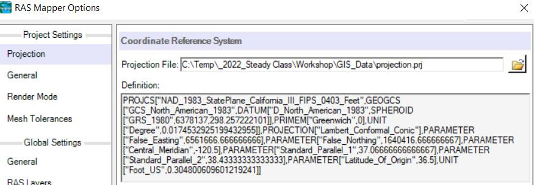
在Project | Set Projection中加载River.prj投影文件，定义整个项目的坐标系统。来源：HEC 官方《Steady Flow Modeling with HEC-RAS》下载地形数据（可选在线获取）
选择
Project | Download Data | USGS Terrain，数据范围选 Current View，点击 Query Products 查询 USGS 服务；在数据筛选中勾选 Original（原始分辨率）并 Apply；用图形选择工具选中覆盖河谷洪泛区的瓦片，点 Add Selected 加入下载列表，再点 Start Download。无网络时可直接使用教程附带的Terrain\USGS_Data地形数据。下载 USGS 地形菜单官方截图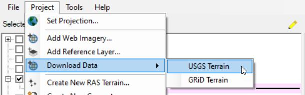
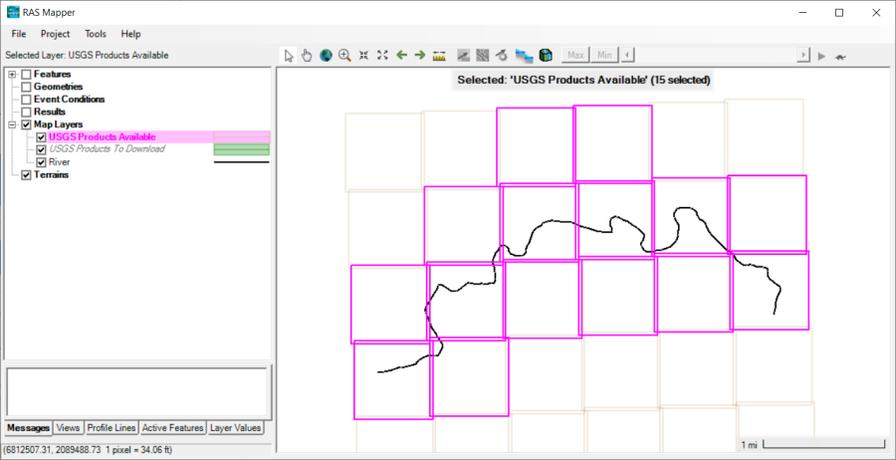
Project 菜单下的 Download Data | USGS Terrain 入口。来源：HEC 官方《Steady Flow Modeling with HEC-RAS》创建地形模型（Terrain）
选择
Project | Create New RAS Terrain，点 Add Files 选中下载的所有地形文件（Ctrl+A 全选）；勾选 Merge Inputs to Single Raster 合并为单一栅格；点 Create 开始处理。处理完成后关闭窗口并打开 Terrain 图层。为什么先建地形？地形（Terrain）是 1D 断面提取高程、2D 网格生成与淹没制图的共同底图。它把多幅 DEM 合并、重投影、统一精度为一份.hdf地形文件。创建地形（New Terrain Layer）官方截图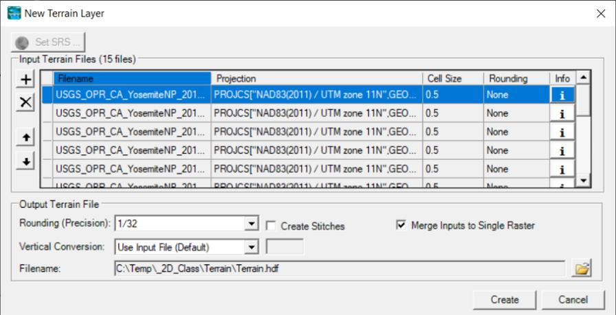
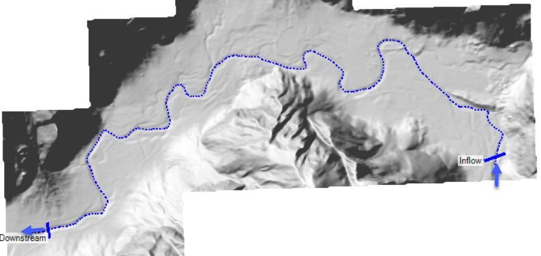
勾选 Merge Inputs to Single Raster 把多幅瓦片合并为单一栅格，点 Create 生成 Terrain.hdf。来源：HEC 官方《Steady Flow Modeling with HEC-RAS》
新建几何并绘制河中心线
选择
Project | Create New Geometry，命名Base。选中几何图层点 Edit 进入编辑。将 River shapefile 的河流中心线复制粘贴到 River 图层（也可用 shapefile 导入器或手工绘制）。用编辑工具右键河流线，选择 Rename River Reach，将河段命名为 Merced River / Yosemite Valley。
重命名河段（Provide River and Reach Name）官方截图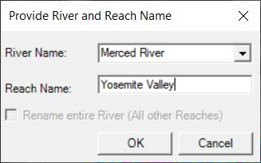
River Name 填 Merced River，Reach Name 填 Yosemite Valley。来源：HEC 官方《Steady Flow Modeling with HEC-RAS》布置断面（Cross Sections）
选择 Cross Sections 图层，沿河道布置断面，注意断面应垂直于流向、充分覆盖洪泛区、在地形与流态变化处加密。布置完成后 Stop Editing 并关闭 RAS Mapper。
打开主界面的 几何示意图（Geometric Schematic），打开刚创建的几何文件
Base，确认断面与中心线正确后 Stop Editing 保存。输入曼宁 n 值
选择
Tables | Manning's n or k values（横向变化），先统一把全部 n 值设为 0.04 作为初值。再打开
Tables | Reach Lengths查看左/主槽/右三段河段长度。官方教程思考题：为什么 Left、Channel、Right 三段长度相同？因为当前还没布置流径线（Flowpaths）——HEC-RAS 默认按几何中心线距离近似三段长度相等。若要精确区分主槽与滩地的实际流动路径，需要在 RAS Mapper 中创建 Flowpaths 图层（见阶段 D）。
输入恒定流数据
打开 Steady Flow Data Editor：输入 6 个方案（Profiles），流量分别为 100、500、1000、2000、5000、10000 cfs（立方英尺/秒）。
选择
Options | Edit Profile Names为每个流量命名（如 100cfs、500cfs、1k、2k、5k、10k，最多 16 字符）。在下游边界处选择 Normal Depth 边界条件。思考：坡度应取多少？影响大吗？——取河道实际纵坡，边界只影响其上游一段。
保存恒定流数据，命名
Steady Flows。编辑方案名称（Edit Profile Names）官方截图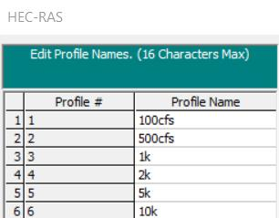
为 6 个流量方案命名：100cfs、500cfs、1k、2k、5k、10k（最多 16 字符）。来源：HEC 官方《Steady Flow Modeling with HEC-RAS》创建方案并计算
打开 Steady Flow Analysis 窗口：Plan 命名
Base，几何选Base，水流文件选Steady Flows，保存方案。点击 Compute 运行计算。完成后在 RAS Mapper 查看淹没结果，用 XS Plot 绘制单个断面。
创建方案（Steady Flow Analysis）官方截图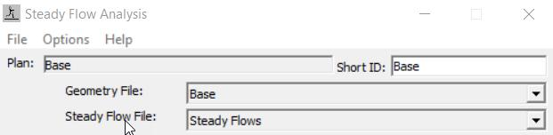
Plan 命名为 Base，几何选 Base、水流文件选 Steady Flows。来源：HEC 官方《Steady Flow Modeling with HEC-RAS》
利用基础运行设置岸滩位置（Bank Stations）
先观察各断面（XS Plot）判断哪个流量方案的水面刚好在岸滩附近（如本案例选 100cfs 或 500cfs）。打开 Geometric Data Editor，选择
Tools | Channel Bank Station Locations，选择你判断的 Profile，再选择岸滩位置的插入方式（建议"在水面处插入站点/高程"）。HEC-RAS 会按该水位的岸边位置自动调整所有断面的 Bank Stations。设置岸滩位置插入方式官方截图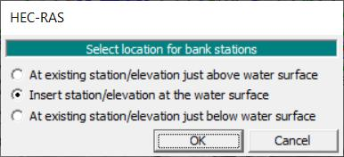
官方推荐选择"Insert station/elevation at the water surface"（在水面处插入站点/高程）。来源：HEC 官方《Steady Flow Modeling with HEC-RAS》建立流径线 Flowpaths（可选）
在 RAS Mapper 中编辑 Base 几何，选择 Flowpaths 图层，在左右滩地各创建一条流径线，用于精确计算主槽与滩地的实际流动距离。完成后 Stop Editing。
重新运行并评估结果
重新 Compute
Base方案，对比设置岸滩前后水面线的变化。为何要保留旧几何？细化前先把Base几何另存为副本（RAS Mapper 中右键几何 → Save Geometry As，命名Refined）。你永远不知道什么时候要回退对比——但一定会需要对比前后方案的进步。
创建土地覆盖（Land Cover）图层
选择
Project | Create New RAS Layer | Land Cover Layer，导入 2019 NLCD 栅格（NLCD_2019.tif），按 NLCD 分类建立 RAS 分类表，点 Create 生成 LandCover 图层。HEC-RAS 会弹出图层关联对话框，把 LandCover 关联到几何的 Manning's n 属性上。创建土地覆盖图层（Create a New Land Cover Layer）官方截图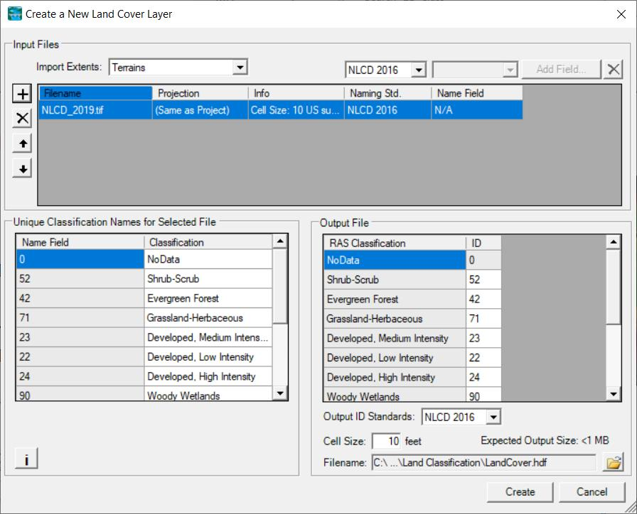
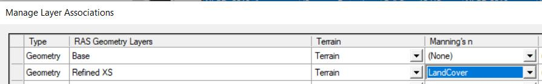
导入 NLCD_2019.tif，按 NLCD 分类建立 RAS 分类表后点 Create。来源：HEC 官方《Steady Flow Modeling with HEC-RAS》为各地类设置曼宁 n 值
右键 LandCover 图层选择 Edit Land Cover Data Table，在分类参数表中为每种地类填入曼宁 n 值。官方教程给出的示例值：
NLCD 地类 → 曼宁 n 值（官方教程示例） ID 地类名称 Manning's n 备注 11 Open Water（水面） 0.035 水面糙率小 21 Developed, Open Space（开发空地） 0.04 22 Developed, Low Intensity（低密度开发） 0.08 23 Developed, Medium Intensity（中密度开发） 0.12 24 Developed, High Intensity（高密度开发） 0.16 不透水/建筑 31 Barren Land（裸地） 0.026 41 Deciduous Forest（落叶林） 0.15 42 Evergreen Forest（常绿林） 0.12 43 Mixed Forest（混交林） 0.14 52 Shrub-Scrub（灌木） 0.12 71 Grassland-Herbaceous（草地） 0.04 官方教程的 Classification Parameters 窗口官方截图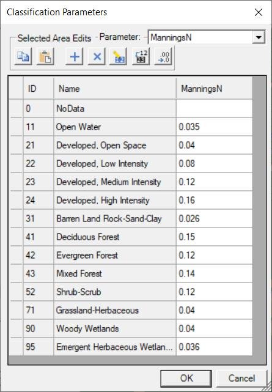
在 ID/Name 分类表上为每种地类填入 Manning's n；截图即官方教程给出的示例值。来源：HEC 官方《Steady Flow Modeling with HEC-RAS》表中数值仅用于跟随官方教程练习；实际项目应根据植被、河道条件与文献经验选取并做敏感性分析。
更新断面糙率并运行细化方案
在 RAS Mapper 中编辑
Refined几何：选中 Cross Sections 图层 →Update Cross Sections | Manning's n Values，把地类 n 值写入全部 104 个断面。打开 Layer Plot Option | Manning's n Values 可检查是否生效。Stop Editing 保存。在 Steady Flow Analysis 中用
File | Save Plan As创建新方案RefinedXS（几何选 Refined XS），Compute 运行。更新断面属性（Update Cross Sections 右键菜单）官方截图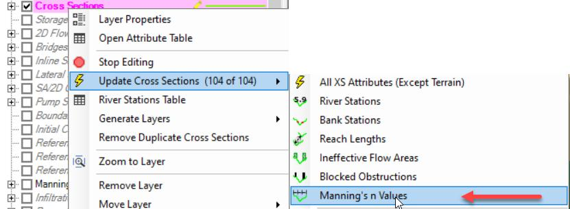
右键 Cross Sections 图层 → Update Cross Sections | Manning's n Values，把地类糙率写入全部断面。来源：HEC 官方《Steady Flow Modeling with HEC-RAS》对比两个方案的结果
方法一（Profile Plot）：打开纵剖面图，
Options | Plans同时勾选 Base 与 RefinedXS 两个方案对比。官方案例结论：细化方案的水面线总体略高（因空间变化糙率更贴近实际）。方法二（RAS Mapper）：右键河流中心线 Save as Profile Line 保存为剖面线；打开两个方案的 WSE（水面高程）图层并开启动画，在 Profile Lines 标签页右键河流线 →
Mapping Results | Profile | Fast | WSE生成沿程水面线对比。官方教程的纵剖面对比图（Profile Plot）官方截图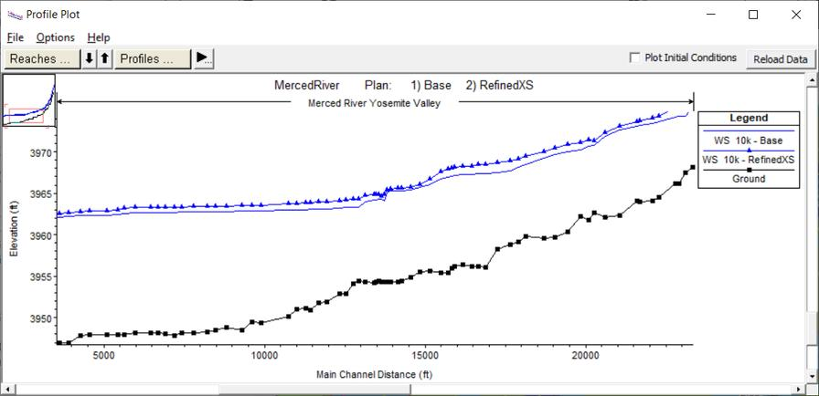
同时勾选 Base 与 RefinedXS 两个方案：细化方案（RefinedXS）的水面线总体略高于 Base——空间变化糙率更贴近实际。来源：HEC 官方《Steady Flow Modeling with HEC-RAS》
加入实测高水位（Observed WS）
打开 Steady Flow Data Editor →
Options | Observed WS，选择河道桩号 2.88（约在桥位附近），点 Add an Obs. WS Location，为 10000cfs 方案输入实测水位 3966 ft。保存并重新运行。添加实测水位位置（Add an Obs. WS Location）官方截图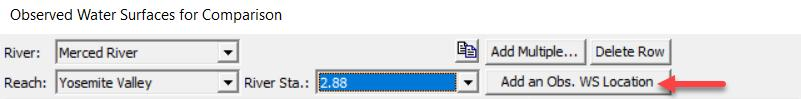
River Sta. 2.88（约在桥位附近），为 10000cfs 方案输入 3966 ft。来源：HEC 官方《Steady Flow Modeling with HEC-RAS》官方案例结论：对比 XS Plot 可见，模拟水面比实测高水位约低 2 英尺。可能原因有三类：几何不准确、边界条件不合理、曼宁 n 值不正确——逐一复查。改善糙率通常最有希望。官方案例：模拟水面比实测低约 2 英尺（XS Plot）官方截图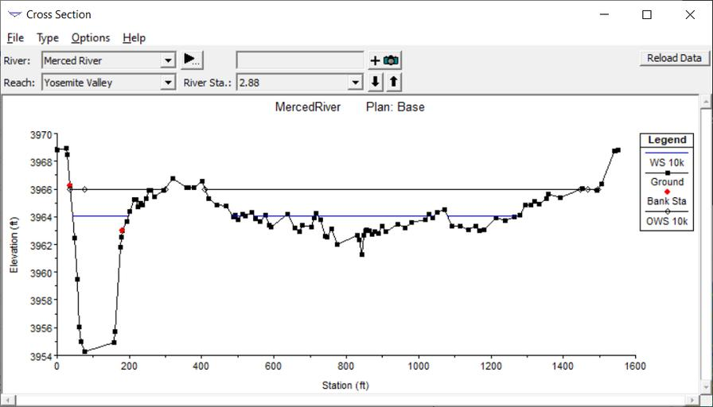
红色 OWS 10k 为实测高水位点，蓝色 WS 10k 为模拟水面——两者相差约 2 英尺，说明模型仍需改进。来源：HEC 官方《Steady Flow Modeling with HEC-RAS》改进曼宁数据：叠加主槽多边形
选择 LandCover 的 Classification Polygons 图层 → Start Editing → 右键 Import Features from Shapefile，导入
Channel_Polygon.shp（主槽范围）；右键新导入的主槽多边形 → Edit Classification Value，新增分类Channel并设 Manning's n = 0.04。Stop Editing 保存。重新 Update Cross Sections | Manning's n Values，重跑并对比结果。官方案例结论：结果有所改善，但仍不理想——研究区还存在未建模的高地（实际应起堤防作用）和一座未入模的桥梁，这些都会抬高水位。
为主槽新增分类并设糙率（Classifications）官方截图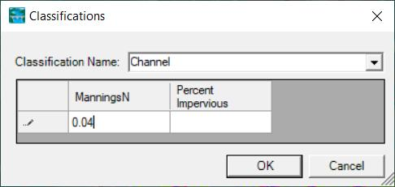
新增 Channel 分类，Manning's n 设为 0.04，用于改进主槽糙率。来源：HEC 官方《Steady Flow Modeling with HEC-RAS》敏感性分析（Bonus）
回答两个问题：① 模型对下游边界条件有多敏感？② 增大/减小曼宁 n 值会如何改变水面线？——用对照方案定量回答，理解模型对各参数的响应是校准的基础。
官方教程二：1D 非恒定流建模
非恒定流模拟的是"流量和水位随时间变化"的过程：给模型一个入流过程线（hydrograph），观察洪水波如何沿河道演进、水位如何涨落。官方 Guides & Tutorials 的《Creating a Combined 1D/2D Model》给出了从 1D 恒定流升级到非恒定流的完整路径，本节按官方流程整理为五个阶段。
| 维度 | 恒定流 Steady | 非恒定流 Unsteady |
|---|---|---|
| 流量输入 | 各断面固定流量（每个 Profile 一个值） | 随时间变化的流量过程线/水位过程线 |
| 方程 | 一维能量方程（标准步进法） | 圣维南方程组（连续 + 动量），有限差分/有限体积求解 |
| 初始条件 | 不需要（由边界向上游/下游递推） | 需要（初始流量分布、蓄水区初始水位） |
| 结果 | 各 Profile 的水面线 | 各断面的水位/流量过程线、最大淹没 |
| 适用 | 设计洪水、恒定工况 | 洪水演进、溃坝、调度、感潮河段 |
.g01、恒定流数据为 .f01、非恒定流数据为 .u01、对应方案为 .p02。先建 1D 恒定流模型打底
官方 Combined 1D/2D 教程建议：任何非恒定流建模前，先创建稳态 1D 模型理解水系行为——用低流量（如 2 年一遇）确认主槽与岸滩位置，用高流量确认洪泛区与断面范围。
量取下游坡降并延伸一维河段
为下游延伸足够长的强一维河段（远离关注区），并在 RAS Mapper 用 Measure Tool 沿河数字化一段河道量取纵坡，作为 Normal Depth 下游边界的坡度。官方提示：正常水深（Normal Depth）是快速设置下游边界的最简方式。
| 类型 | 含义 | 典型位置 |
|---|---|---|
| 流量过程线 Flow Hydrograph | 输入 Q–t 序列（可手工录入、从 HEC-DSS 读取或来自 HEC-HMS），最常见的上游边界 | 上游边界 / 支流 |
| 水位过程线 Stage Hydrograph | 输入 Z–t 序列，用于有实测水位的边界或感潮河口（潮位过程） | 上/下游边界 |
| 水位-流量关系 Rating Curve | 用 Q–H 曲线定义边界，适合有稳定率定关系的下游 | 下游边界 |
| 正常水深 Normal Depth | 给定能量坡度，快速设定下游边界 | 下游边界 |
| 侧向入流 Lateral Inflow | 沿程分布式入流过程线（支流、区间汇流） | 河道内部（Internal） |
| 均匀侧向入流 Uniform Lateral Inflow | 沿整段河道均匀分配的入流 | 河道内部（Internal） |
输入非恒定流边界条件
打开 Unsteady Flow Data Editor：在边界条件表中为最上游断面选 Flow Hydrograph（录入过程线或读取 DSS），为最下游断面选 Normal Depth / Stage Hydrograph / Rating Curve。需要时在内部断面"Add Boundary Condition Location"加侧向入流。
录入后务必点 Plot Data 检查过程线形状是否正确。过程线支持 Min Flow（最小流量下限）与 Multiplier（整体缩放系数）两个便捷选项。
设置初始条件
在 Initial Conditions 页输入初始流量分布（常用方式：输入最上游初始流量，程序自动做一次恒定流计算得到各断面初始水位）；也可用上一次运行的 Restart File 续算。蓄水区需给初始水位。
稳定性经验：以低基流（baseflow）启动并设置足够的预热期（warm-up），让模型自动达到稳定初态；过程线变化过陡容易导致振荡，可用"Critical Boundary Condition"选项在流量突增时自动减半时间步长。设置断面水力表参数（常见遗漏！）
官方特别强调：从恒定流升级到非恒定流时最常犯的错误是忘记设置断面水力表参数（Hydraulic Table Parameters）——若不设置，模拟一开始 HEC-RAS 就会报数据缺失。在 Geometric Data Editor 中点击 Hydraulic Table Parameters：把渠底高程（invert）复制到 Starting Elevation 列，再加一个增量（官方默认 0.5 ft）；设置足够的计算点数，使其覆盖全部预期流量产生的水位范围——可逐个断面看右侧竖向切片确认水位范围。
设置模拟时间窗与计算步长并运行
创建非恒定流方案：设定 Simulation Time Window（起止日期时间）、Computational Time Step（如 1–5 分钟起步，2D 单元通常需要更小步长）。先用短时间窗试算，评估一个时间步（见学习参考 · 常见问题）后再跑长模拟。
计算选项与公差（Computation Options and Tolerances）
关键计算选项 Advanced Time Step Control 让 HEC-RAS 按 Courant 准则自动计算时间步长，免去手工试算。 Time Slices 时间分片 当 2D 域需要比 1D 更小的时间步时使用：基步长保持不变，2D 域内部按分片再细分，平衡稳定性与运行时间。 Theta 隐式权重因子 默认 1.0 最稳定（动量方程压差项只用当前步信息）；调到 0.6 更精确但牺牲稳定性。 Lateral Structure Flow Stability Factor 抑制侧向结构（堰/路堤）流量突变：1.0 最准确，3.0 明显提高稳定性（模型稳定后可调回）。 Output Interval 输出间隔 结果输出的时间间隔，影响过程线分辨率与结果文件大小。
运行并查看结果
结果包括：各断面 水位/流量过程线（Stage/Flow Hydrograph Plot）、最大淹没范围（RAS Mapper）、溃坝过程线（Breach Hydrograph）、沿程水面纵剖面动画等。
稳定性排查（官方经验清单）
一开始就不稳定（计算输出显示迭代到最大次数 / NaN / 振荡）→ 多半是初始条件或边界条件问题，先复查这两项。
支流汇入主河处持续振荡→ 常见于"较陡支流 + 主河计算出的很低初始水位"的组合，本质是交汇处几何数据不一致。官方对策：junction 处默认强制各断面同一水面，可改用能量平衡法求解交汇水面以稳定模型。
减小时间步长→ 若结果显著改变，说明步长过大，应采用更小步长重跑。
Volume Accounting 误差大→ 检查堰流设置（Weir Flow Submergence Decay Exponent 等）、减小时间步长；确认高地是否真的起堤防作用。
敏感性对比：把方案另存为新名重跑，逐个评估时间步长、Theta、糙率等参数对水面线/流速的影响。
官方教程三：2D 建模入门
2D 建模把洪泛区离散为计算网格，在每个网格单元上求解浅水方程，能真实刻画漫滩水流、回流、堤防绕流等二维现象。官方 2D 教程包括《Creating a Simple 2D Model》与《Mesh Generation and Refinement》等。
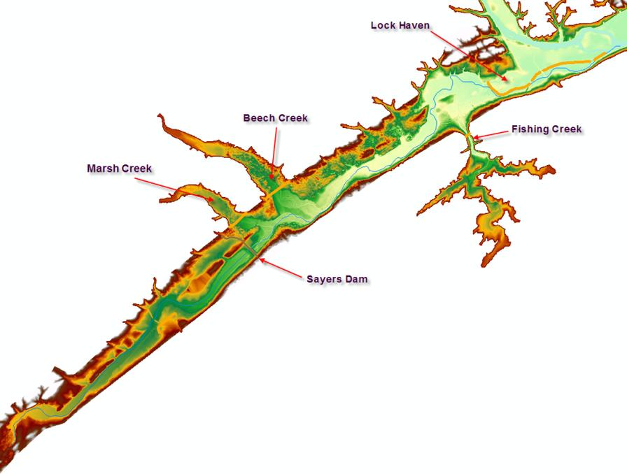
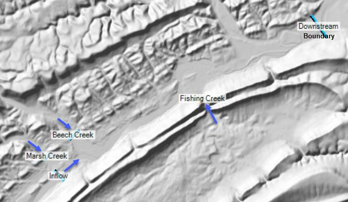
单元中心 Cell Center
每个网格单元的计算中心，水面高程在此求解。单元中心不一定是几何形心。
单元面 Cell Faces
单元之间的边界面，流量跨面交换。面必须沿堤防、路堤等线性阻水物对齐，否则水流会"泄漏"。
面端点 Face Points
单元面端点（FP），外边界上的 FP 用于连接 1D 元素、边界条件线与 2D 流场。
生成计算网格
在 Edit 2D Area Properties 中输入 DX/DY 点距（官方简单模型示例用 500；官方《Mesh Generation and Refinement》教程用 200 起步、熟悉后再细化到 100），点 Generate Computation Points 生成非结构化网格；设置默认 Manning's n（如 0.04）。关闭编辑器，打开 Computation Points 图层检查网格边界，每个单元只能有一个计算点，出错用编辑工具增删移动点修正。Stop Editing 保存几何。
2D Flow Area Editor官方截图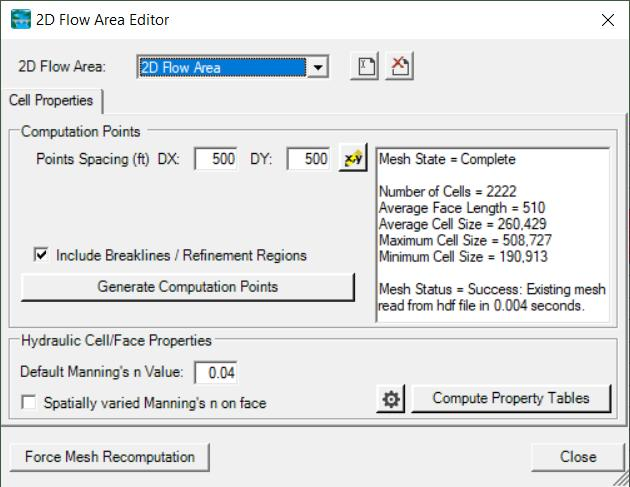
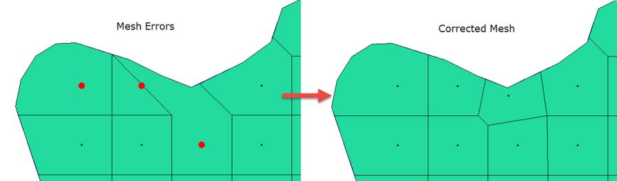
DX/DY 点距 500 ft（官方简单模型示例）、Generate Computation Points 生成 2222 个单元、默认 Manning's n = 0.04；右图为单元/计算点错误（红色）与修正。来源：HEC 官方《Creating a Simple 2D Model》与《Mesh Generation and Refinement》计算水力表并检查单元属性
右键 2D Flow Areas 图层 → Compute 2D Flow Areas Hydraulic Tables，为网格计算水力特性表（左下角有处理进度）。选中该图层（选中后变为洋红色），用鼠标点选 Cell 或 Cell Face，右键 Plot Property Table 即可查看单元的属性表——检查单元高程、面积、与周边面的连接是否合理。
复制几何做网格细化对比
右键几何 → Save Geometry As 复制出一份（如 Initial Mesh → Refined Mesh），编辑副本并把 2D Area 重命名（如 2DArea_2）以区分；在 2D Flow Area Editor 中把点距改小（官方示例 200 → 100 ft）并重新 Generate Computation Points（会提示删除旧点）。对比粗细两套网格的水力结果，判断细化是否改变结论。
绘制边界条件线（BC Lines）
在 RAS Mapper 中编辑几何，选择 Boundary Condition Lines 图层，在入流、支流、出流位置各画一条边界线（迎向下游时从左到右绘制），并命名。边界线必须画在网格外部。回到主界面打开几何示意图核对。
边界条件线（Boundary Condition Lines）官方截图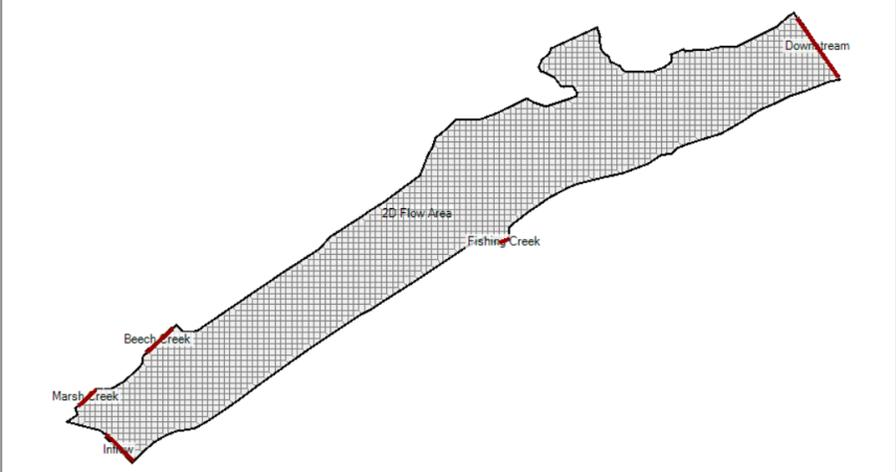
在入流（Sayers Dam）、三条支流与下游位置各画一条边界线，标注为 Inflow、Marsh Creek、Beech Creek、Fishing Creek、Downstream。来源：HEC 官方《Creating a Simple 2D Model》输入非恒定流边界并运行
在 Unsteady Flow Data Editor 中为边界线指定边界条件：上游/支流用 Flow Hydrograph（官方示例从
Simple2DModel_Flows.dss读取），下游用 Normal Depth（Slope = 0.001）。创建非恒定流方案，设置模拟时间窗与时间步长，Compute 运行。非恒定流数据编辑器的边界条件表官方截图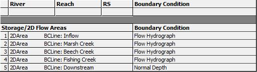
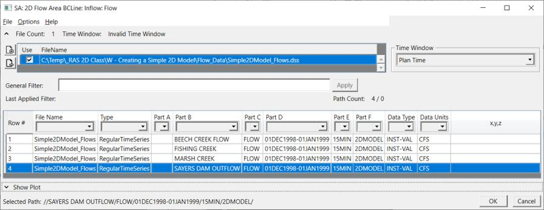
上游与支流用 Flow Hydrograph，下游用 Normal Depth（Slope = 0.001）；流量过程线从 Simple2DModel_Flows.dss 读取。来源：HEC 官方《Creating a Simple 2D Model》
| Flow Hydrograph 流量过程线 | 最常用的入流边界：流量随时间变化，可来自实测、水文模型或 DSS。 |
| Stage Hydrograph 水位过程线 | 水位随时间变化，用于感潮河口、有实测水位的出流边界。 |
| Normal Depth 正常水深 | 给定能量坡度，快速设定出流边界（官方简单模型下游用 Slope = 0.001）。 |
| Precipitation 降雨 | 对 2D 域施加降雨（可含入渗），用于城市内涝、分布式降雨场景。 |
| Zero Depth / Outlet | 自由出流 / 出流口边界，用于出水口与排水场景。 |
网格细化：Refinement Regions
用 Refinement Regions 在关键区（主槽、地形突变、建筑物周边）局部加密：复制几何 → 新建 Refinement Region 多边形并设单元间距 → 右键 Enforce Region 强制执行。策略：只对 10–20% 的关键区域加密——全流域单元减半会让单元数增加约 4 倍、计算时间增长约 4 倍。
Breaklines：强制面沿高地
单元面（Cell Faces）控制单元间的流量交换，必须沿堤防、路堤、高地等线性阻水物对齐，否则水流会"泄漏"。选择 Breaklines 图层沿高地画线，右键 Enforce Breakline 强制执行。
官方要点：只点 Enforce Breakline 只会在当前已有计算点上生效；正确流程是打开 2D Flow Area Editor，勾选 Generate Computation Points with Enforce Breaklines / Refinement Regions 重新生成计算点，程序会按设定间距重新布点并强制 Breakline 生效。
| 扩散波 Diffusion Wave（SWE-EM） | 忽略对流加速度的简化浅水方程，稳定性好、允许较大时间步，适合大多数漫滩与城市洪涝场景；对动量效应显著的场景（弯道、急流）精度受限。 |
| 完整浅水方程 SWE（Full Saint-Venant） | 完整求解动量守恒，适合需要精确刻画回流、弯道环流、桥墩绕流的场景；对时间步长更敏感。 |
| 显式浅水求解器（6.0 新增） | 动量守恒更好的显式求解器，需要更小时间步长、运行更久，用于对动量精度要求最高的场景。 |
查看结果图层与动画
运行后在 RAS Mapper 中勾选 WSE / Depth / Velocity 结果图层查看淹没范围，用动画控制条（Max 按钮）查看最大淹没；Profile Lines 可沿任意剖面提取水面线，Reference Polygon 统计区域水量。完整的制图流程见 官方教程实战 · 04 RAS Mapper。
常见 2D 错误排查
计算点错误：每个单元只能有一个计算点，生成后务必打开 Computation Points 图层检查，红色错误点用增删移动修正。
水流沿线性阻水物"泄漏"：单元面未与堤防/路堤对齐——用 Breaklines 强制对齐（见阶段 D）。
Terrain 空洞：DEM 有 NoData 时地形出现空洞，会影响单元高程提取——先补洞再建地形。
边界线画在网格内部或方向错误：BC Lines 必须画在网格外部，且按迎流方向从左到右绘制。
RAS Mapper 与淹没制图
RAS Mapper 是 HEC-RAS 内置的 GIS 环境：准备地形、绘制河网与断面、生成 2D 网格、映射并动画化计算结果，是 1D/2D 建模与洪水制图的统一工作台。本节按 HEC 官方教程《Developing 1D Geometric Data with RAS Mapper》与《RAS Mapper User's Manual》整理，从界面认识讲到端到端淹没制图。
启动 RAS Mapper
在主界面通过
GIS Tools | RAS Mapper菜单，或直接点击工具栏上的 RAS Mapper 按钮启动。RAS Mapper 是独立窗口，顶部为菜单与工具栏（选择、平移、缩放、识别），左侧为图层面板，中间为地图窗口，底部为状态与工具标签页。主界面入口（GIS Tools | RAS Mapper）官方截图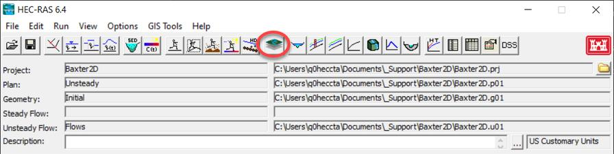
GIS Tools 菜单与工具栏上的 RAS Mapper 按钮。来源：HEC《RAS Mapper User's Manual》认识主界面布局
左侧 Layers 面板把所有数据按组组织：Geometries（几何）、Results（结果）、Terrains（地形）与 Map Layers（底图/参考）等；右上角显示当前选中图层与渲染模式（如 Max 最大淹没）；右下角为水深/高程比例尺；底部 Messages / Views / Profile Lines / Active Features / Layer Values 标签分别提供消息、视图管理、剖面线、交互查询与图层值读取。
RAS Mapper 界面（显示 Depth 水深图层）官方截图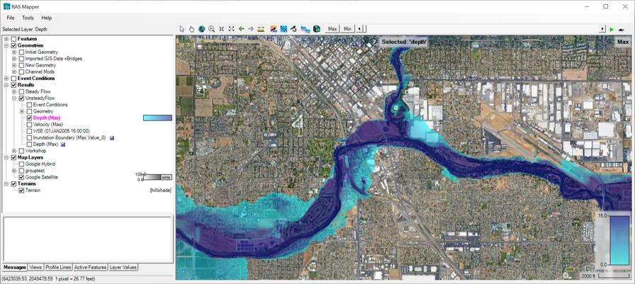
图层按组管理，结果按方案（Plan Short ID）分组显示。来源：HEC《RAS Mapper User's Manual》图层体系
RAS Mapper 的图层按用途分为五组：模拟结果按 Plan Short ID 分组且自包含（事件条件 + 几何 + 结果图）。
RAS Mapper 主要图层 图层 用途 Features 河流中心线、剖面线、参考点/线/多边形（用于聚合统计区域结果） Geometries 几何数据：River、Cross Sections、Storage、2D Flow Areas、Bridges、Inline/Lateral Structures、Pump Stations 等 Event Conditions 水流数据、边界条件位置 Results 计算结果图层：水面高程 WSE、水深 Depth、流速 Velocity 等，可做动画播放 Map Layers 地形 Terrain、土地覆盖 Land Cover、入渗、土壤、栅格计算器（RASter Calculator）等
新建项目并设置投影
选择
File | New Project…，进入工作目录，填写 Title 与 File Name 后保存（官方示例命名 GeometryDevelopment.prj）。打开 RAS Mapper，选择
Tools | Set Projection for Project（旧版本位于 Project 菜单），浏览到 GISData 文件夹选择projection.prj并确定。投影定义了整个项目所有空间数据（地形、几何、结果）的坐标系统，必须在导入任何空间数据前设置，否则后续图层会错位。新建项目（New Project）官方截图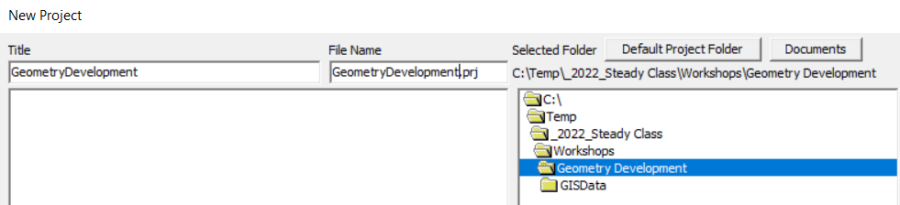
填写 Title 与 File Name（自动带 .prj 后缀），选择项目文件夹。来源：HEC 官方《Developing 1D Geometric Data with RAS Mapper》设置投影（RAS Mapper Options）官方截图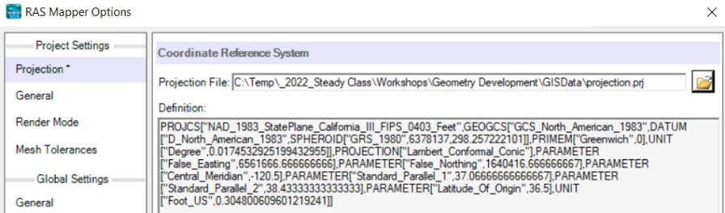
加载 projection.prj 后，Definition 区显示完整 PROJCS 坐标系定义。来源：HEC 官方《Developing 1D Geometric Data with RAS Mapper》下载地形数据（可选在线获取）
选择
Project | Download Data | USGS Terrain（或 GRID Terrain），数据范围选 Current View，点击 Query Products 查询 USGS 服务；在数据筛选中勾选 Original（原始分辨率）并 Apply；用图形选择工具选中覆盖河谷洪泛区的瓦片，点 Add Selected 加入下载列表，再点 Start Download。无网络时可直接使用教程附带的Terrain文件夹中的地形文件。创建地形模型（Terrain）
选择
Project | Create New RAS Terrain，点 + 添加地形文件（官方示例为 5 个.flt瓦片，也可选.tif/DEM）；把 Rounding (Precision) 设为 1/32；按需勾选 Create Stitches（缝合）与 Merge Inputs to Single Raster（合并为单一栅格）；点 Create 生成Terrain.hdf。为什么先建地形？地形是所有几何与结果的共同底图：1D 断面提取高程、2D 网格提取单元高程、淹没制图比较水位都依赖它。它把多幅 DEM 合并、重投影、统一精度为一份.hdf文件。创建地形（New Terrain Layer）官方截图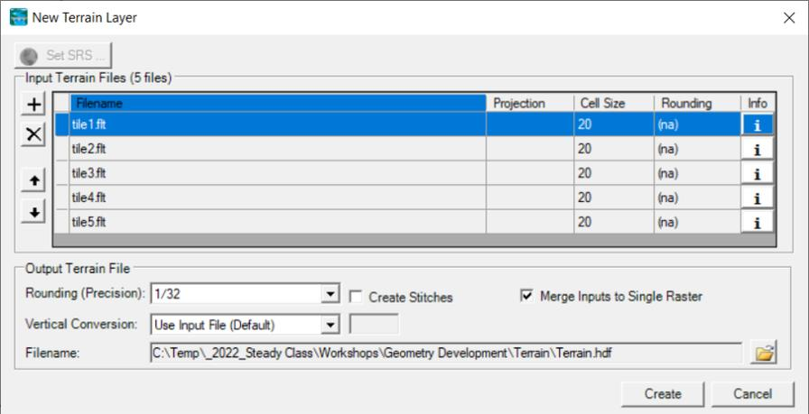
添加 5 个地形瓦片，Rounding 1/32、勾选 Merge Inputs to Single Raster 后点 Create。来源：HEC 官方《Developing 1D Geometric Data with RAS Mapper》检查地形显示
创建完成后双击 Terrain 图层打开 Layer Properties，按需开启：Update Legend with View（图例随视野更新）、Plot Contour（显示等高线并可调间隔）、Plot Surface（显示地表）、Plot raster file outlines / names（栅格文件边界与名称）。借此检查地形覆盖范围是否完整、是否存在 NoData 空洞——空洞会影响后续断面/网格的高程提取，发现后应补充数据或先做修补再建地形。
新建几何并绘制河网
在 RAS Mapper 中右键 Geometries 节点，选择 Add New Geometry 并命名（官方示例 Existing）；选中几何后点铅笔图标进入编辑。
点击 Rivers 节点开始绘制河网：河流/河段从上游画到下游（正流向），左键单击加点、双击结束一条线；右键可重新定位地图中心，Shift 拖拽平移、滚轮缩放。画完一条河段会弹出 Provide River and Reach Name 命名窗口（官方示例：Baxter River / Main）。支流画到主流上时，程序会提示创建 junction——依次确认拆分主流、为下游河段命名（如 Main-Lower）、命名 junction 即可。河段名默认显示在河段起点。
官方教程研究区河网（Baxter 河与 Tule 支流）官方截图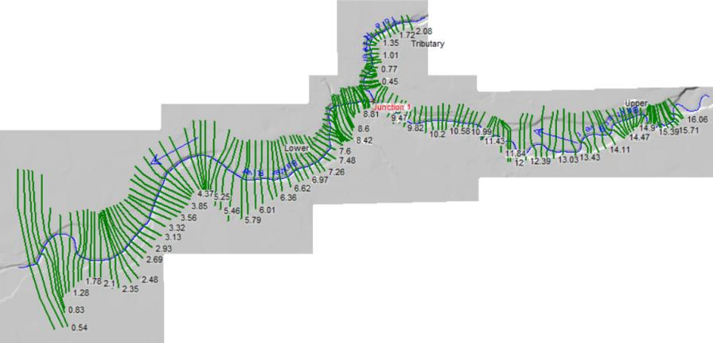
两支流在 Junction 汇合，主流分 Upper / Lower 两段。来源：HEC 官方《Developing 1D Geometric Data with RAS Mapper》布置断面（Cross Sections）
选择 Tools | Options 可把 XS River Stations 单位改为 Miles（可选）。点击 Cross Sections 节点，沿每条河段布置断面（官方示例每条河段约一打断面），以合理表达 1D 河槽-洪泛区水流。断面必须面向下游从左到右绘制！
每条断面绘制后自动获得 River Station（按中心线距离计算，默认英尺）。画完点击工具栏的 Plot 按钮可弹出 RASMapper Plot 查看高程剖面：绿线为从地形提取的断面（Terrain），红色为当前断面（Profile），圆点为岸滩点（Bank Points）——新增断面时两者一致；再画下一条，剖面图会自动更新。
编辑断面与从地形更新
选中断层面，双击断面进入编辑，拖动端点可加宽断面、改变其跨越洪泛区的方式；观察剖面图变化。注意：已存在的断面被视为"已有断面"，程序不会自动用地形覆盖其数据（防止误覆盖人工编辑）。需要重新贴合地形时，右键断面选择 Update Cross Section | Elevation Profile from Terrain，再 Plot 核对剖面与地形线是否一致。
Auto Update Geometry 与图层关联
编辑状态下右键几何图层选择 Auto Update Geometry，点 Check All Properties 勾选全部属性（River Stations、Bank Stations、Reach Lengths、Elevations – Channel / Overbanks、Ineffective Areas、Blocked Obstructions、Manning's n Values 等）。此后在 RAS Mapper 中移动断面、改动中心线，保存时这些属性会自动从地形与几何重新计算。
再用
Project | Manage Geometry Associations（或 RAS Geometry Properties 里的 Manage Associations）把 Terrain、Land Cover 等图层关联到几何——这是断面提取高程、按土地覆盖提取糙率的前提。
添加结果图层
运行方案后，RAS Mapper 的 Results 组会按 Plan Short ID 列出方案。右键方案节点选择 Add Results Map（或右键 Results 组添加）：选择 Map Type（WSE 水面高程、Depth 水深、Velocity 流速等）、Unsteady Profile（非恒定流的某个时刻 / Max / Min）与 Map Output Mode（动态或存储），点 Add Map 生成结果图层。
动画与最大值查看
勾选结果图层后，用地图窗口顶部的动画控制条播放/步进非恒定流各时刻；点 Max 按钮切换到最大淹没（Depth (Max)、Velocity (Max) 等），快速定位最不利时刻。
动态图实时渲染，适合交互浏览；需要批量处理或加速大模型显示时，可右键 Results 组打开 Manage Results Maps 对话框，选中图层点 Compute/Update Stored Maps 预计算存储图（状态变为 Map files up to date），可一次处理多个方案，并支持复制、删除结果图。
剖面与区域统计
底部 Profile Lines 标签页可沿任意剖面线提取水面线与河床纵剖面，用于对比沿程水位；Active Features 允许点击单元/断面交互查询属性；Layer Values 显示鼠标位置图层值。添加 Reference Point / Line / Polygon 后可聚合区域内单元结果，计算总水量、平均流速、净冲淤等（对水库蓄量、淹没体积分析很有用）。
准备地形
Project | Create New RAS Terrain：导入 DEM/栅格（可多幅合并），生成.hdf地形文件，并用Tools | Set Projection for Project设置坐标系统。布置几何并关联图层
创建几何（河网、断面、2D 网格）后，在 Manage Layer Associations 中把 Terrain 与 Land Cover 关联到对应几何，2D 网格会从地形提取单元高程、断面按土地覆盖取糙率。
运行计算
在主界面运行恒定流或非恒定流方案，结果自动写入 RAS Mapper 的 Results 图层。
映射与动画
勾选 WSE / Depth / Velocity 图层查看淹没范围；选中 Results 组图层，用动画控制条的 Max 按钮显示最大淹没；Profile Lines 标签页可沿任意剖面线提取水面线。
参考区域统计
添加 Reference Polygon 后可聚合区域内单元结果，计算总水量、平均流速、净冲淤等（对水库蓄量、淹没体积分析很有用）。
导出与发布
右键结果图层可 Export 为 Shapefile / GeoTIFF 等格式，供 GIS 软件继续处理；
File | Export Map Image导出当前视图图片用于报告；需要网页/地图服务展示时可导出 Google Earth KML/KMZ。RASter Calculator（栅格计算器，Map Layers 下）可对栅格图层做代数运算：例如 Cut/Fill 挖填方分析、两个方案的淹没深度差（100 年 vs 50 年）、淹没范围布尔提取等，是方案对比与工程分析的有力工具。
泥沙输移模拟
以水动力结果为基础，模拟"床沙在动"的长期过程：冲刷、淤积、河床粗化与水库淤积，用于中长期河床演变研究。
按粒径分级计算
输沙能力按粒径组分（grain size fraction）计算，可模拟水力分选（sorting）与河床粗化（armoring），更真实地反映床沙级配演变。
两种计算模式
准非恒定流（Quasi-Unsteady）：把过程线离散为一系列恒定时段，计算快，适合多年尺度；全非恒定流（Fully Unsteady）：1D 与 2D 均可，适合洪水过程内的冲淤响应。
配套工具
SIAM（泥沙影响分析）快速评估方案影响；BSTEM 岸坡稳定性分析；2D 泥沙支持 Capacity Only / Concentration Only 等固定床简化分析；泥石流（非牛顿流体）1D/2D 模拟。
官方教程目录中的泥沙案例包括：1D Sediment Transport、2D Sediment Transport、Mud and Debris Flow，每个案例都附有示例数据集，可逐步跟做。
水质与水温模拟
模拟"水质在变"的过程：水温沿程变化与营养盐、溶解氧等组分的迁移转化，用于河流环境研究。
| 水温 Water Temperature | 一维对流-扩散（QUICKEST-ULTIMATE 格式），完整热平衡（太阳辐射、蒸发、对流等） |
| 藻类 Algae | 藻类生物量与营养盐摄取的耦合模拟 |
| 溶解氧 DO | 复氧、耗氧、光合呼吸等过程 |
| 碳质生化需氧量 CBOD | 有机污染物耗氧衰减 |
| 氮 | 有机氮、氨氮 NH₄-N、亚硝氮 NO₂-N、硝氮 NO₃-N 的迁移转化 |
| 磷 | 溶解有机磷 Org-P、溶解正磷酸盐 PO₄-P |
必须知道的理论基础
理解 HEC-RAS 的计算原理，才能正确地布置模型、解释结果、判断异常。以下为官方 Hydraulic Reference Manual 的核心内容摘编。
HEC-RAS 的一维水动力计算基于水力学三大方程：连续性方程（质量守恒）、能量方程（伯努利方程的工程扩展）与动量方程（牛顿第二定律）。三者适用于不同场景——渐变流用能量方程，急变流（水跃、桥梁、汇流节点）用动量方程，连续性方程则贯穿始终。
恒定渐变流的基本计算基于一维能量方程：断面 2 的总水头等于断面 1 的总水头减去两断面间的能量损失：
能量损失由两部分组成：摩阻损失 hf（用曼宁公式计算）与收缩/扩张损失 hc（等于流速水头变化乘以收缩/扩张系数 C）：
在急变流场景——混合流态（水跃）、桥梁水力、汇流节点——能量方程不适用，改用动量方程求解。
n 值是模型中最敏感的参数之一，参考范围（数值见官方《Hydraulic Reference Manual》）：
| 表面类型 | n 值范围 | 说明 |
|---|---|---|
| 人工顺直渠道（混凝土） | 0.012 – 0.017 | 光滑、规则，变化小 |
| 人工渠道（土质/砌石） | 0.020 – 0.035 | 视植被与糙度而定 |
| 天然河道（清洁） | 0.030 – 0.050 | 一般山区/平原河流主槽 |
| 天然河道（弯曲/多石/杂草） | 0.050 – 0.080 | 深潭、倒树、大块石 |
| 洪泛区（草地/农田） | 0.035 – 0.070 | 滩地低植被 |
| 洪泛区（灌木/树林） | 0.080 – 0.150 | 高植被阻水显著 |
弗劳德数（Froude number）是判断明渠流态的核心无量纲数：Fr < 1 为亚临界（缓流），扰动向上游传播、水流受下游控制；Fr = 1 为临界流；Fr > 1 为超临界（急流），水流受上游控制。HEC-RAS 恒定流计算据此自动选择计算方向。
明渠渐变流水面线按床坡类型（缓坡 M、陡坡 S、临界坡 C、水平 H、逆坡 A）与水深相对正常水深 yn、临界水深 yc 的区域组合分类，共 12 类（如 M1/M2/M3、S1/S2/S3 等）。判断水面线类型可帮助验证计算结果是否物理合理：
| 类型 | 特征与工程含义 |
|---|---|
| M1（回水曲线） | 缓坡上 y>yn>yc，上游受下游堰坝、水库、干流顶托形成的壅水曲线，向上游渐进趋于正常水深 |
| M2（降水曲线） | 缓坡上 yn>y>yc，下游跌落（如陡坎、入汇大河），水面线向下游降低 |
| M3（水跃前段） | 缓坡上 y<yc<yn，急流进入缓流段时先跌后跃 |
| S2 | 陡坡上 yc>y>yn，急流降水曲线 |
| S3 | 陡坡上 y<yn<yc，水跃下游的急流段 |
| H2 / A2 / A3 | 水平坡/逆坡上的降水与壅水曲线，常见于坝下消能段与逆向坡度河段 |
能量方程假定能量守恒（含损失项），在急变流区域不成立——水跃、桥梁/涵洞上下游、闸堰、汇流节点等场景 HEC-RAS 使用动量方程。水跃的共轭水深关系是判断跃前跃后水位的经典公式：
1D 非恒定流求解器（改编自 UNET）数值求解一维圣维南方程组。连续方程：
动量方程：
HEC-RAS 一维非恒定流求解器在时空网格上采用Preissmann 四点隐式格式离散圣维南方程组：每个计算时段内，未知量同时以当前时刻与下一时刻的加权平均参与求解，从而允许较大的时间步长而不失稳。时间权重 θ 决定格式性质：
显式数值格式要求信息传播在一个时间步内不越过一个空间步长，即 Courant 条件；隐式格式理论上无条件稳定，但为控制数值耗散与振荡，仍建议满足 Courant 数接近 1：
2D 求解器在非结构化网格上求解二维浅水方程（连续性 + x/y 方向动量，含底坡、摩阻、涡粘、风应力等项），扩散波求解器则忽略对流加速度项以换取更好的稳定性与更大时间步。连续性方程：
x 方向动量方程（示意，完整含风应力与科氏力项）：
扩散波忽略圣维南方程组中的惯性项（对流加速度与当地加速度），保留压力项与摩阻项，稳定、可大步长，是 HEC-RAS 2D 默认求解器（SWE-EM）的理论基础，适合大多数漫滩与城市洪涝：
2D 求解器采用有限体积法：在每一个网格单元（cell）上积分守恒形式的方程，通过单元面（face）计算相邻单元间的流量通量——这正是实战章节中"单元中心 / 单元面 / 面端点"三个概念的数值理论来源；单元面必须沿堤防等线性阻水物对齐，否则通量会"泄漏"。
动床模拟把河床变形与水流输沙耦合起来：河床高程变化由输沙量沿程梯度决定（Exner 方程），而输沙率由水动力条件（剪应力）与床沙粒径决定。HEC-RAS 泥沙模块支持多种输沙率公式（Meyer-Peter Müller 推移质、Engelund-Hansen 全沙、Toffaleti 等），按粒径分级计算。
水质组分（温度、溶解氧、藻类、营养盐、CBOD 等）在水体中的迁移由对流与扩散/弥散控制，并叠加反应源汇项。HEC-RAS 一维水质输运采用 QUICKEST-ULTIMATE 格式求解：
常见问题与经验技巧
官方手册专设《Troubleshooting With HEC-RAS》章节；以下为教程与工程实践中最高频的问题清单。
Q1模型计算不稳定/发散（振荡、NaN）怎么办？
非恒定流：① 减小计算时间步长（先试 1–5 分钟）；② 增加预热期，以低基流启动；③ 检查几何是否有突变断面、负河段长度、重叠断面；④ 过程线过陡时开启 Critical Boundary Condition 或对过程线做平滑；⑤ 使用 Min Flow 保证最低流量；⑥ 检查初始条件是否与边界一致（先用恒定流初始化）。
恒定流：① 检查断面间距是否过大导致水面线剧烈变化；② 检查是否有"无效流动区"未被定义；③ 检查流态设置（亚临界/超临界/混合）是否与实际一致；④ 检查边界条件坡度是否合理。
Q2断面需要多少个？怎么布置？
没有固定数量，原则是：沿程地形与流态变化处加密。在桥梁、涵洞、堰上下游、汇流口、坡度突变处必须加密断面；尽量保证相邻断面间的过流能力过渡平缓，避免流量分配剧烈跳变。低流量断面用于确认主槽与岸滩，高流量断面用于确认洪泛区范围。
Q3Normal Depth 边界的坡度怎么取？
取边界断面附近的河道实际纵坡（床底坡度）。可用 RAS Mapper 的测量工具沿河段量取，或用地形数据计算。选错坡度会使边界附近水位明显偏高或偏低，因此下游断面一般要延伸到研究区下游足够远，让边界条件的影响衰减。
Q42D 网格单元取多大合适？
经验参考：单元尺寸取 DEM 分辨率的 2–5 倍；单元不能小于 DEM 分辨率（更小不会更准，只会更慢）。大面积平缓区用大单元，主槽、堤防、建筑物周边用 Refinement Regions 局部加密。单元数翻倍会带来约 4 倍的单元量与计算时间，因此优先局部加密。
Q5DEM 有 NoData 空洞怎么办？
建模前先用 GIS 工具填补水流路径上的 NoData（水体区域常见）。2D 网格生成与计算在 NoData 单元上会产生数值不稳定甚至报错。RAS Mapper 创建地形后应目视检查研究区是否有空洞。
Q6计算水位与实测水位差很多？
按官方教程的三板斧排查：几何是否准确（断面、建筑物、高地/堤防是否入模）、边界条件是否合理（坡度、水位/流量关系）、曼宁 n 值是否正确。多数情况下先做糙率敏感性分析，再结合实测高水位（Observed WS）逐步校准。
Q7计算时间步长怎么选？
官方指南：先设一个较短的模拟时间窗，运行后用计算日志评估一个时间步（比如观察解是否收敛、Courant 条件）。2D 扩散波求解器允许较大步长（数分钟），显式浅水求解器需要更小步长（秒级）。经验上从 1–5 分钟起步，按稳定性与精度要求调整。
Q81D 和 2D 怎么选？
河道单一、水流近似一维（如深窄河谷）时 1D 高效且足够；河道出槽漫滩、城区复杂下垫面、需要刻画二维流向（回流、绕流、漫滩路径）时用 2D 或 1D/2D 耦合——河道用 1D（效率），滩区/城区用 2D（精度）。官方提供了专门的《Creating an Combined 1D/2D Model》指南。
官方学习资源
HEC 官网提供免费、完整且持续更新的文档、教程与培训材料——本文所有内容均可在以下资源中找到权威原文。